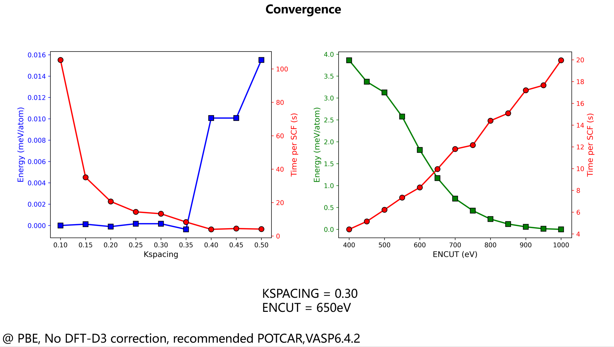
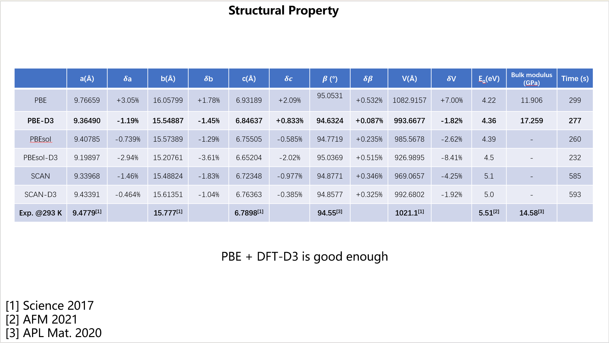
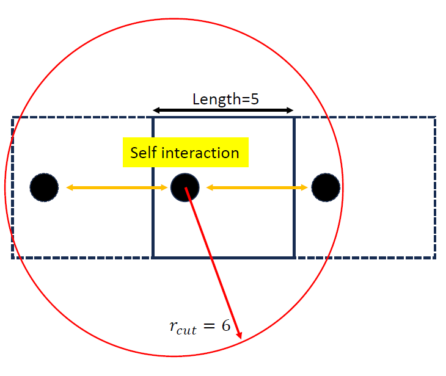
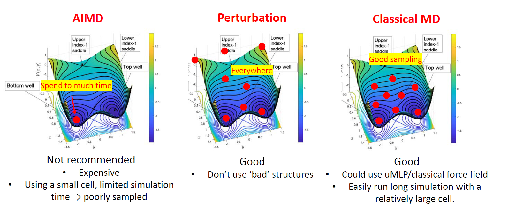
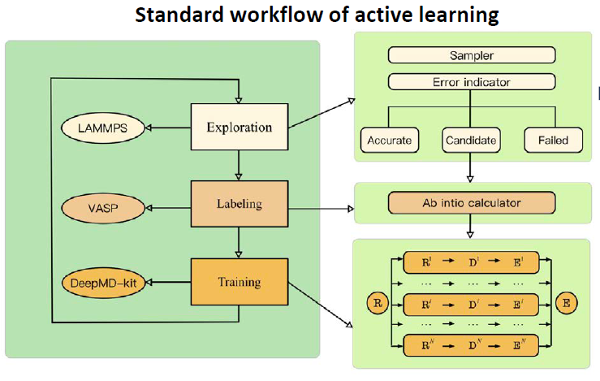

A practical guide to machine learning potential development¶
©️ Copyright 2025 @ Liu Theory Lab
Author：
Denan LI
Date：2025-10-20
Lisence：This document is licensed under Attribution-NonCommercial-ShareAlike 4.0 International (CC BY-NC-SA 4.0) license.
1. Target¶
- Goal: This tutorial provides a practical guide to the workflow for developing machine learning potentials (MLPs). It focuses on the essential steps and key considerations, omitting exhaustive technical details for clarity.
- About inputs: To support your learning, all relevant input files and scripts are provided.
- Prerequisites: The content focuses exclusively on the MLP development process itself. While this workflow requires data from methods like Density Functional Theory (DFT) and Molecular Dynamics (MD), prior expertise in these areas is not required. The provided materials are sufficient to perform the standard calculations needed to follow this guide.
2. General workflow¶
The development of a machine learning potential follows a structured process that can be summarized in three main phases:
- Before Your Start: Preparation
- Defining the application scope
- Performing the convergence tests
- During Development: Iterative Training
- Preparing the initial training database
- Running the Active learning cycle
- After Development: Validation and Optimization
- Evaluating the Final model's accuracy
- Optimizing the model's computational speed
3. Before Your Start¶
3.1 Defining the application scope¶
A core limitation of machine learning models is their poor performance in extrapolation. An MLP will only yield reliable predictions for atomic environments that are well-represented in its training data; its performance on entirely new configurations can be highly inaccurate.
Therefore, your training database must comprehensively sample all configurations relevant to your research goal. For example:
- To study a phase transition, the database must contain structures from all relevant phases and the transition pathways between them.
- To study defect migration (e.g., an oxygen vacancy), the database must include configurations that explicitly sample the defect's movement.
This leads to a critical rule: the intended application dictates the required content of the training data. It is essential to clearly define what you want to study with your MLP before you begin, as this will determine the entire data generation strategy.
3.2 Performing the convergence tests¶
The accuracy of a machine learning potential is fundamentally limited by the quality of the reference data it learns from. This follows the classic principle of "garbage in, garbage out": an MLP trained on inaccurate DFT results will inevitably be inaccurate itself.
Therefore, it is imperative to perform rigorous convergence tests before generating any training data. You must ensure that the calculated properties—specifically energies, forces, and stresses—are well-converged. Key parameters that require testing include the choice of exchange-correlation (XC) functional, the plane-wave energy cutoff, and the density of the k-point sampling grid.
Real example:
Here is an example for TMCM-CdCl\(_3\), an organic-inorganic hybrid material. All input files used are available for reference here.

Figure 1. Convergence of the total energy with respect to the plane-wave cutoff (left) and k-spacing (right).

Figure 2. Comparison of cell parameters obtained with different XC functionals against experimental data.
Comment:
- For k-point sampling, we use the "k-spacing" metric, which ensures a consistent sampling density when dealing with simulation cells of different sizes.
- There is always a trade-off between accuracy and computational cost.
4. During Development¶
4.1 Prepare initial database¶
The first step in active development is to create an initial database. This is done by generating diverse atomic configurations and then calculating their energies and forces using DFT.
A Critical Prerequisite: The Cutoff Radius
Most MLPs are local models that consider atoms within a cutoff radius (\(r_c\)). To avoid errors in periodic systems, this cutoff should be smaller than the length of the shortest lattice vector (\(r_c< L_{min}\)). Using too large a cutoff causes an atom to unphysically interact with its own periodic image (See figure below).

Methods for Generating Initial Configurations
Common strategies for generating structures are compared in Figure 4. Each involves a trade-off between cost and sampling quality.

1. Ab Initio Molecular Dynamics (AIMD)
Run a short AIMD simulation and re-calculate sampled frames with high-accuracy DFT.
- Pro: Generates physically correct configurations.
- Con: Very expensive, leading to small systems and short simulation times, which can result in poor sampling (above figure, left).
2. Perturbation
Apply random displacements to atoms and/or random strain to the simulation cell of a known structure.
- Pro: A simple and cheap way to generate many diverse structures.
- Con: Can create unrealistic high-energy configurations or break molecules. (above figure, middle)
3. Classical Molecular Dynamics
Use a pre-existing force field or universal MLP to run a long MD simulation and sample frames for DFT calculations.
- Pro: Allows for extensive and efficient sampling in large systems (above figure, right).
- Con: Requires a suitable pre-existing potential, which might not be available or accurate for your specific system.
Example inputs available here
4.2 Running Active learning¶
An MLP trained only on the initial database is rarely robust enough for large-scale, production-level simulations. The model will inevitably encounter new atomic environments where its predictions are unreliable. Therefore, it is necessary to have a systematic way to find these points of failure and enrich the database accordingly. This is the purpose of active learning.
The standard active learning workflow is a closed loop, as shown in figure below. It generally consists of three stages: Exploration (using the current MLP to find new configurations), Labeling (calculating accurate DFT data for failed configurations), and Training (retraining the MLP with the enriched database).

A detailed technical discussion of this workflow is beyond the scope of this guide. For a comprehensive explanation of the procedure, we strongly recommend reading the COMPUTATIONAL METHODS section of the paper by Jing Wu, Phys. Rev. B 103, 024108. This algorithm is fully implemented in the open-source DP-GEN package, which facilitates this entire process. Example input files are here
If things go wrong
During active learning, you may find that progress stalls (e.g., the accuracy ratio of newly sampled configurations is very low). If this occurs, you should carefully check each stage:
- Training: Does your model achieve a good fit on the existing training data? If not, there may be an issue with the model or data itself.
- Exploration: Are your MD simulations stable? Inspect the trajectories to ensure the system has not crashed (e.g., melted or become disordered), as such configurations are often not useful.
- Labeling: Are your DFT calculations converging normally? Check the outputs to ensure the reference energies and forces are reliable.
General Exploration Strategy
A highly effective exploration strategy is to proceed from easy to hard, and from simple to complex. Begin active learning with simulations under less demanding conditions (e.g., low temperatures, bulk crystals) and gradually increase the complexity (e.g., higher temperatures, introducing surfaces or defects) as the potential becomes more robust (see Phys. Rev. B 107, 144102, Phys. Rev. B 108, L180104).
Note:dpgen input
5. After Development¶
5.1 Model validation¶
After the active learning cycle converges, you have your final MLP model. The next critical step is to perform a comprehensive validation to test its accuracy and predictive power. These tests can be broadly classified into two categories:
-
Regular Tests (Comparison with DFT) This first set of tests verifies that the MLP has accurately learned the underlying DFT potential energy surface. This is done by comparing the MLP's predictions directly against reference DFT calculations (often on an unseen test set). Common regular tests include:
- Fitting Accuracy: Checking the correlation plots for energies and forces. Typical target errors are around ~5 meV/atom for energies and ~50 meV/Å for forces.
- Equation of State: Calculating the energy-volume curve and ensuring properties like the equilibrium volume and bulk modulus match the DFT values.
- Phonon Dispersion: Verifying that the model correctly reproduces the material's vibrational properties and dynamical stability.
- Energy Barriers: Comparing NEB for processes you are interested in (e.g., defect migration).
- Energetic Ordering: Ensuring the model predicts the correct relative energies between different phases or configurations.
- etc.
-
The Golden Standard (Reproducing Experiments)
While passing regular tests is essential, the ultimate validation of an MLP is its ability to reproduce real-world experimental outcomes. This is the "golden standard" because it confirms the model's physical realism. This typically involves using the MLP to run large-scale simulations to predict macroscopic properties, such as the temperature-dependent phase diagram of a material.
Notes:
-
It is relatively straightforward to improve a model that fails a regular test; you can often add more relevant data to the training set and retrain. However, it is vital to understand the relationship between these two categories of tests:
- Perfect scores on regular tests (i.e., very low force errors) do not guarantee success in reproducing complex experimental phenomena.
- Conversely, a model may be "inaccurate" on some regular tests but still capture the essential physics needed for a specific application.
For example, a study on carbon (Phys. Rev. Lett. 131, 146101) produced a correct phase diagram even with force errors as high as 1 eV/Å. Similarly, classical force fields often fail regular tests against DFT but have been used for decades to correctly model dynamics. The key takeaway is that validation should be focused on the model's ability to answer the specific scientific question it was built for.
5.2 Optimization of speed¶
Once your model's accuracy has been validated, a final step before starting large-scale production simulations is to optimize its computational speed. For users of the Deep Potential framework, it is possible to significantly accelerate the model, sometimes achieving a speedup of over 50 times with a negligible impact on accuracy.
Here are three common methods available in the DeepMD-kit package:
- Compress the Model
- Core idea: tabulating the embedding network
- Details: Compress a model
- Use Single-Point Precision
- Core idea: By default, calculations may use double precision (FP64). However, single precision (FP32) is often sufficient for MD simulations
- Details: Use single-point precision
- Enable
type_one_side- Details: type_one_side
- It not only accelerates the training significantly, but also improves the model's inference speed.